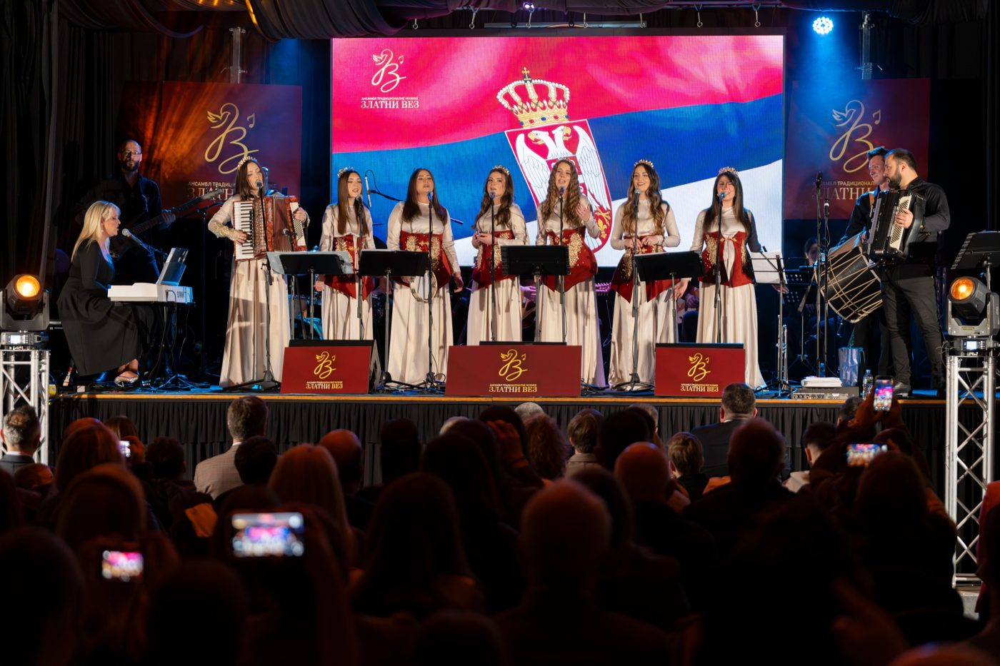

Pesme
Pročitajte priču →
„Oj Kosovo, Kosovo“: pesma čežnje za srcem otadžbine
Kada zapevamo „Oj Kosovo, Kosovo“, cela sala peva sa nama. Za mnoge je to gotovo himna. Evo zašto.
Kada zapevamo „Oj Kosovo, Kosovo“, cela sala peva sa nama. Za mnoge je to gotovo himna. Evo zašto.

28. jun je jedan od najvažnijih dana u srpskom kalendaru. Pesma „Vidovdan“ nosi celu njegovu priču u nekoliko stihova.

Crveni cvetovi cvetaju kroz srpske narodne pesme. Nikada nisu samo cveće. Evo šta znače.

Sala je bila puna, a energija neopisiva. Od prvih glasova bilo je jasno da ovo neće biti obično veče.

Naš decembarski koncert u Lyonsu podržaće novi projekat. Objavićemo ga ovde pre nego što karte budu rasprodate.